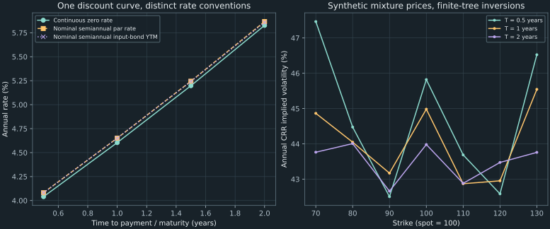

12. Constructing curves and volatility surfaces
Two bonds can mature on the same date, use the same discount curve, and still have different yields to maturity. In the example below, a two-year zero-coupon bond has a nominal semiannual yield of approximately 5.912397%, while a two-year bond paying 5 each half-year has approximately 5.838147%. Their cash flows sample the same nonflat curve with different weights. Joining their yields cannot produce a universal rule for discounting every payment.
This chapter turns individual inversions into a consistent collection. We first recover discount factors from coupon-bond prices and choose what to interpolate. We then derive cross-strike option-price constraints and construct a small surface from one declared finite-state model. The R and Python laboratories illustrate the complete quote-to-root-to-plot pipeline, including the conventions and diagnostics that must accompany each point.
Source spine: recording 33, synthesis of yield curves and implied-volatility surfaces, recording 35, R laboratory, and recording 36, Python laboratory. The bootstrap table, price-shape proofs, consistent option mixture, and interpolation guarantees are explicit teaching constructions. They supply mechanisms behind the source's overview; the numerical inputs are synthetic unless identified as a declared lecture fixture.
12.1 Decide which financial object the curve represents Recording 33, 1:10
A discount factor $D(t)$ is the time-zero price of one unit of certain currency paid at time $t$, with $D(0)=1$. In a deterministic-rate, default-free model, a bond paying known amounts $c_i$ at dates $t_i$ has price $P=\sum_i c_iD(t_i)$. The same $D(t_i)$ prices every comparable payment at that date. Currency, settlement date, payment timing, credit treatment, and trading assumptions belong to this statement. Combining unrelated issuers or dates can destroy the common-price interpretation.
A bond's yield to maturity is instead one scalar that reproduces that particular bond price under a chosen compounding formula. For face 100, $n$ half-year periods, payment $c$ each half-year, and nominal annual yield $y$, the equation is
\[ P=\sum_{k=1}^{n}c(1+y/2)^{-k}+100(1+y/2)^{-n},\qquad y>-2.\tag{12.1} \]The equation places all dates on a flat discount pattern determined by one $y$. It does not establish that this pattern prices other bonds. A plot of each bond's fitted $y$ against its final maturity is a coupon-bond YTM curve. A zero curve represents prices of individual dated payments. A par curve represents coupon rates that make hypothetical bonds trade at face value. These objects can all be useful, but their labels and compounding conventions must remain visible.
A common maturity does not imply a common coupon-bond yield
Take half-year dates $(0.5,1,1.5,2)$ and discount factors $(0.98,0.955,0.925,0.89)$. A two-year zero-coupon bond has price $100(0.89)=89$. Its nominal semiannual yield is exactly $2(0.89^{-1/4}-1)$, approximately 0.059123969. A different two-year bond paying 5 each half-year has price $5(0.98+0.955+0.925+0.89)+100(0.89)=107.75$. Solving (12.1) gives approximately 0.058381474. The same final payment date and same discount factors produce different YTMs because the earlier coupons matter.
Under a genuinely flat semiannual curve $D(k/2)=(1+y/2)^{-k}$, every positive-cash-flow bond on that grid has the same fitted yield: substitution into its pricing sum gives (12.1), and strict price decrease in $y$ gives uniqueness. The counterexample therefore identifies the missing assumption rather than a failure of the root solver. Converting a zero rate from continuous to semiannual compounding is a separate operation; it cannot remove coupon dependence from a nonflat curve.
At a minimum, a quote table should retain an instrument identifier, observation time, settlement date, currency, payment dates and amounts, full or clean-price status, and any accrued-interest adjustment. The examples here settle at a coupon date, so the quoted full prices require no accrued-interest correction. Floating-point tolerances and a converged YTM cannot repair a mismatched cash-flow schedule.
12.2 Recover dated discount factors by a triangular solve Recording 33, 2:39
Suppose there is one bond for each consecutive half-year maturity $t_n=n/2$. Bond $n$ pays coupon $c_n$ at every date up to $t_n$ and repays face $F$ at $t_n$. All bonds use the same discount factors $D_k=D(k/2)$. Its full price obeys
\[ P_n=c_n\sum_{k=1}^{n-1}D_k+(F+c_n)D_n, \qquad D_n=\frac{P_n-c_n\sum_{k=1}^{n-1}D_k}{F+c_n}.\tag{12.2} \]At the first date there are no earlier coupons, so $D_1=P_1/(F+c_1)$. Once $D_1,\ldots,D_{n-1}$ are known, subtract the value of bond $n$'s earlier coupons and divide by its final payment. This sequential identification is bootstrapping. It recovers a common set of dated prices. It is more than reusing a previous YTM estimate to accelerate another independent root search.
The proof of uniqueness is a triangular-system argument. The cash-flow matrix has zeros after each bond's maturity and diagonal entries $F+c_n$. If these diagonal entries are nonzero, the first equation uniquely determines $D_1$, the next uniquely determines $D_2$, and induction determines all $D_n$. Thus these complete-date fixtures need only arithmetic, not a nonlinear root solver. Nonlinear instrument conventions or interpolation-dependent missing dates can create a different calibration problem.
An exactly repriced four-bond example
Use face $F=100$ and the following synthetic full-price table. Each coupon is the amount per half-year, not the annual coupon percentage. The discount factors reproduce every row's cash flows.
| Maturity (years) | Half-year coupon | Full price | Recovered $D_n$ | Continuous zero rate (%) | Nominal semiannual par rate (%) |
|---|---|---|---|---|---|
| 0.5 | 2 | 99.9600 | 0.980 | 4.040541 | 4.081633 |
| 1 | 2.5 | 100.3375 | 0.955 | 4.604394 | 4.651163 |
| 1.5 | 3 | 101.0800 | 0.925 | 5.197436 | 5.244755 |
| 2 | 3.5 | 102.1250 | 0.890 | 5.826691 | 5.866667 |
The first two calculations are $D_1=99.96/102=0.98$ and $D_2=(100.3375-2.5\times0.98)/102.5=0.955$. The third is $(101.08-3(0.98+0.955))/103=0.925$. Finally, $(102.125-3.5(0.98+0.955+0.925))/103.5=0.89$. Repricing the last bond gives $3.5(3.75)+100(0.89)=102.125$. A separate square linear solve of the full cash-flow matrix in the companion reproduces the same vector.
For a positive discount factor, the continuously compounded zero rate $z(t)$ is defined by $D(t)=e^{-tz(t)}$, hence $z(t)=-\log D(t)/t$ for $t>0$. To find the coupon amount $c_n^{\mathrm{par}}$ that makes an $n$-period bond cost face value, solve $F=c_n^{\mathrm{par}}\sum_{k=1}^nD_k+FD_n$. The nominal annual semiannual par rate is therefore
\[ y_n^{\mathrm{par}}=\frac{2c_n^{\mathrm{par}}}{F} =\frac{2(1-D_n)}{\sum_{k=1}^{n}D_k}.\tag{12.3} \]For two years, $\sum D_k=3.75$, so the par coupon is $100(0.11)/3.75=2.933333\ldots$ per half-year and its nominal annual rate is 5.8666667%. The input bond's coupon is instead 3.5; its own YTM is approximately 5.8585679%. The continuous zero rate, nominal par rate, and input-bond YTM need not coincide. A direct comparison should acknowledge both the different cash-flow definitions and the different compounding conventions.
What the triangular structure assumes
If the shortest available bond matures at one year but pays a coupon at six months, one equation contains two unknown discount factors. The equation alone cannot identify both. Adding a smoothness assumption or an extra instrument may close the problem, but it changes the information used. With many noisy bonds at overlapping dates, exact simultaneous repricing may be impossible; a fitted curve then needs a stated objective, quote weights, and residual diagnostics. A choice of spline cannot replace this accounting.
Every recovered discount factor must be positive in this model: a claim paying a positive certain unit cannot have a nonpositive price in a frictionless market with a positive-valued bank account. An inconsistent table can make the numerator in (12.2) nonpositive, which the companion rejects. Positivity does not imply $D(t)\leq1$ or decreasing $D$. Negative rates can produce rising discount factors. The extra restriction of nonnegative forward rates implies decreasing discounts; it should be imposed only when that restriction belongs to the model.
Errors in an early discount factor affect later bootstrap steps because its coupon value is subtracted again. For a fixed later price and coupons, a perturbation in an earlier $D_j$ contributes $-c_n\,\delta D_j/(F+c_n)$ directly to $\delta D_n$, with additional indirect effects through intermediate steps. Exact repricing of a rounded table is consequently a numerical consistency check, not proof that the underlying quotes are precise.
12.3 Choose the interpolated quantity and its boundary policy Recording 33, 2:11
Knowing $D(1)$ and $D(1.5)$ does not uniquely determine $D(1.25)$. An interpolation rule supplies that missing assumption. Interpolating YTM, zero rate, discount factor, logarithmic discount factor, or forward rate generally gives different prices between the same input dates. State the quantity first; a smooth-looking curve does not identify it.
For this example, interpolate $\ell(t)=\log D(t)$ linearly and include the anchor $D(0)=1$. Between dates $a<b$, let $\theta=(t-a)/(b-a)$. Then
\[ \ell(t)=(1-\theta)\ell(a)+\theta\ell(b),\qquad D(t)=D(a)^{1-\theta}D(b)^{\theta}.\tag{12.4} \]Positive endpoint discounts imply positive interior discounts, because exponentiating a finite real number is positive. The method reproduces both endpoints. If $D(b)\leq D(a)$, the logarithmic slope is nonpositive, so discounts decrease throughout that segment. These conclusions follow on the entire segment, rather than only at sampled plot points.
A forward rate is determined by a discount-factor ratio
A time-zero portfolio of $1/D(a)$ units of the claim paying at $a$ costs one currency unit. The same initial cost buys $1/D(b)$ units of the claim paying at $b$. Equating these dated certain values gives the forward accumulation factor from $a$ to $b$ as $D(a)/D(b)$. Its continuously compounded annual forward rate is
\[ f_{a,b}=\frac{\log D(a)-\log D(b)}{b-a}.\tag{12.5} \]Equivalently, a forward contract exchanging one unit at $a$ for $D(a)/D(b)$ units at $b$ has zero initial value: its discounted cash flows cancel. The associated simple annualized rate would be $(D(a)/D(b)-1)/(b-a)$, a different convention. Formula (12.4) makes the instantaneous logarithmic forward $-\ell'(t)$ constant on each open interval and equal to (12.5). It may jump at the input dates; a continuous discount curve need not have a continuous derivative.
For $a=1$, $b=1.5$, the log-linear midpoint is $D(1.25)=\sqrt{0.955\times0.925}\approx0.939880311529$. The interval forward is approximately 0.063835205937, or 6.3835206% continuously compounded annual. Interpolating the two continuous zero rates instead and discounting to 1.25 years gives approximately 0.940577305755. Both rules fit the given endpoints; they disagree on a new cash flow because they supply different behavior between them.
import math
d_one, d_one_half = .955, .925
d_mid = math.exp(.5 * (math.log(d_one) + math.log(d_one_half)))
forward = math.log(d_one / d_one_half) / .5
assert abs(d_mid - .9398803115290798) < 1e-14
print(f"D(1.25)={d_mid:.12f}, forward={forward:.12f}")
The complete implementation validates strictly increasing positive dates, matching finite positive discounts, and an evaluation time within $[0,t_{\max}]$. It then uses NumPy's piecewise linear interpolation on logarithms. NumPy normally returns endpoint values outside its grid and does not enforce increasing sample coordinates. The wrapper checks those conditions and rejects extrapolation rather than silently extending a chosen boundary discount. This is part of the financial contract, not merely array housekeeping.
A cubic spline adds continuity of selected derivatives, but that property alone does not prove positive discounts or economically acceptable forwards. Smoothing forward rates or fitting a parametric family introduces its own constraints and objectives. For a production comparison, the U.S. Treasury methodology description revised in February 2025 identifies its official output as a par curve and describes bootstrapping followed by monotone-convex interpolation in forward rates. That published construction illustrates why the instrument set, fitted quantity, and interpolation rule belong together. The small log-linear example here implements its own stated policy.
12.4 Check option prices together before interpreting their volatilities Recording 33, 4:25
An implied-volatility slice takes options with one underlying and one expiry, varies strike, and inverts each price using one specified model. Before inversion, compare the contracts in price space. Use European calls on a non-dividend-paying stock, common maturity $T$, spot $S_0$, and deterministic discount factor $D=D(T)>0$. Ignore transaction costs and permit the trades used below. Different exercise styles, dividends, settlement rules, or observation times require corresponding changes.
Individual bounds and vertical spreads
The terminal call payment obeys $0\leq(S_T-K)^+\leq S_T$. It also exceeds or equals $S_T-K$. Pricing these inequalities using the same positive pricing rule gives
\[ \max(S_0-DK,0)\leq C(K)\leq S_0.\tag{12.6} \]The affine payment $S_T-K$ is replicated by one share and borrowing the present value $DK$. Thus the lower bound is a portfolio statement as well as an expectation inequality. For two strikes $K_1<K_2$, inspect the three terminal regions $S_T\leq K_1$, $K_1<S_T<K_2$, and $S_T\geq K_2$. The call difference pays respectively zero, $S_T-K_1$, and $K_2-K_1$. Therefore
\[ 0\leq C(K_1)-C(K_2)\leq D(K_2-K_1).\tag{12.7} \]Calls decrease with strike, and every adjacent strike slope lies between $-D$ and zero. A unit cap on the payoff difference becomes a discounted cap on its price. Checking only that prices decrease would miss a spread priced above its largest possible discounted payment.
Convexity and a butterfly with a negative purchase price
For $K_1<K_2<K_3$, set $\lambda=(K_3-K_2)/(K_3-K_1)$. Then $K_2=\lambda K_1+(1-\lambda)K_3$. The positive-part function is convex: the maximum of the two affine functions zero and $S_T-K$ lies below the same weighted combination of its endpoint maxima. Consequently
\[ C(K_2)\leq\lambda C(K_1)+(1-\lambda)C(K_3).\tag{12.8} \]The corresponding portfolio buys $\lambda$ calls at $K_1$, buys $1-\lambda$ calls at $K_3$, and sells one at $K_2$. Its terminal payment is nonnegative at every stock value. For equal strike spacing, multiply by two to obtain the familiar one-minus-two-plus-one butterfly. For unequal spacing, the weights matter: using equal weights would leave a different payoff.
Take $S_0=100$, $D=1$, strikes $(90,100,110)$, and call quotes $(15,12,5)$. Each quote satisfies (12.6). The adjacent slopes are $-0.3$ and $-0.7$, so each vertical spread satisfies (12.7) as well. But convexity requires slopes to increase with strike. Here the butterfly purchase price is $15-2(12)+5=-4$, while its terminal payoff is
\[ B(s)=\begin{cases} 0,&s\leq90,\\ s-90,&90<s\leq100,\\ 110-s,&100<s<110,\\ 0,&s\geq110. \end{cases}\tag{12.9} \]Buying this portfolio receives four units initially and never owes a negative terminal payment. Investing the receipt produces a strictly positive additional terminal payment. Three individually plausible inversions therefore need not form a consistent slice. Interpolating through their implied volatilities does not remove this existing quoted-price arbitrage.
For ordered strikes $K_i$, define adjacent slopes $m_i=(C_{i+1}-C_i)/(K_{i+1}-K_i)$. The companion checks the bounds, $-D\leq m_i\leq0$, and $m_{i+1}\geq m_i$ separately. These are necessary finite-grid conditions. The numerical tolerance accommodates arithmetic roundoff in synthetic calculations; it is not a bid/ask rule or permission to trade against a sub-tolerance discrepancy. For observed quotes, evaluate whether the relevant portfolios remain executable after spreads and costs.
Piecewise linear interpolation in call price preserves these conditions between the supplied strikes when they hold at the endpoints. Each segment has one of the allowed slopes, and increasing adjacent slopes give convexity at every knot. Its values are convex combinations of endpoint prices, preserving the upper bound. Convexity of $\max(S_0-DK,0)$ makes the same combinations at least the required lower bound. This proves preservation on the bounded strike interval; it neither supplies the missing tails nor proves that an arbitrary volatility interpolation has the same property.
12.5 Build a small surface from one consistent price family Recording 33, 5:01
The source's common pipeline is collect prices, invert a model at each contract, and interpolate the results. To make the consistency question observable, generate prices first from one finite-state model with common dates. This example uses a separate zero-rate environment; it does not combine the preceding positive-rate bond curve with unrelated option discounting.
Set $S_0=100$, no dividends, and a bank account with growth one. Each step is one month. At time zero choose one of two regimes with pricing weights 0.75 and 0.25. In the first regime every monthly factor is 1.1 or 0.9 with equal conditional weights; in the second it is 1.2 or 0.8. Keep the chosen regime throughout the path and use independent coin flips conditional on it. Each regime's conditional mean factor is one, so the stock is a martingale under this common pricing distribution: the conditional mean next stock price equals the current price. The regime weights define valuation in this teaching model, not estimated real-world probabilities.
For any terminal call, linearity of expectation gives the mixture price
\[ C(K,T)=0.75\,C_{1.1,0.9}(K,n)+0.25\,C_{1.2,0.8}(K,n), \qquad n=12T,\quad T\in\{0.5,1,2\}.\tag{12.10} \]Each component is computed by Chapter 8's lattice with $G=1$ and $q=1/2$. All state weights are positive. The same distributional construction applies at six, twelve, and twenty-four months; separate unrelated choices at each maturity would not establish this common dynamics. Adding the regime can also change replication possibilities, so a positive mixture valuation is not a claim that one stock and bank account uniquely hedge every regime-dependent risk.
Why call prices increase across these three maturities
Let $m>n$ be two monthly dates and write $\mathcal F_n$ for the information accumulated through month $n$, including the chosen regime in this proof. The martingale property iterates to $E[S_m\mid\mathcal F_n]=S_n$. For every random variable $X$, $E[X^+\mid\mathcal F_n]\geq\max(E[X\mid\mathcal F_n],0)$: $X^+\geq X$ and $X^+\geq0$ prove both inequalities directly. Apply this to $X=S_m-K$ and then average:
\[ E[(S_m-K)^+]\geq E[(S_n-K)^+].\tag{12.11} \]Because rates are zero, these expectations are the option prices. This proves the fixed-strike calendar ordering here, rather than inferring it from the slope of a volatility graph. With changing forwards, dividends, discounting, or different exercise rights, the comparison requires the appropriate normalization and assumptions. A blanket rule that every raw call price or every annualized implied volatility increases with expiry would overstate (12.11).
Invert the generated quotes using a different, specified model
At each strike $70,80,\ldots,130$ and each maturity, solve $C_n^{\mathrm{CRR}}(\sigma;K,T)=C(K,T)$ using $n=12T$, continuous rate zero, and bracket $[0.01,2]$. The companion checks the bracket and stops on volatility width $10^{-10}$. The resulting CRR implied parameter describes a price in the chosen finite CRR model. It is not one of the mixture's monthly jump factors, nor an observed instantaneous volatility. A matching root in a checked bracket does not establish a general global uniqueness theorem for all finite-tree contracts.
| Expiry (years) | Call at $K=90$ | Call at $K=100$ | Call at $K=110$ | CRR IV at $K=100$ (%) |
|---|---|---|---|---|
| 0.5 | 17.431957031 | 12.346824219 | 8.909324219 | 45.821590249 |
| 1 | 22.003149488 | 17.429278796 | 13.557208484 | 44.983641068 |
| 2 | 28.059974820 | 24.166918789 | 20.530462125 | 43.981681505 |
The call prices increase down each strike column, as the proof predicts, while the at-the-money implied parameter decreases with maturity in this example. Across strike, the plotted finite-tree inversions have visible local irregularities. Discrete payoff regions and model choice affect these implied values. A smooth U-shaped smile is neither a definition of implied volatility nor a universal shape requirement. Smoothing these points would introduce an additional operation whose repriced consequences must be checked.

A bounded price surface with a provable preservation property
For this common zero-rate strike grid, first interpolate each maturity's prices linearly in strike. Then, for a time between neighboring maturities, take the linear time-weighted average of those two price slices. At $K=105$, $T=0.75$, the four surrounding prices at strikes 100/110 and maturities 0.5/1 have equal weights, yielding approximately 13.060658929.
At a fixed intermediate time, this is a convex combination of two slices with the same bounds and allowed slopes. Its strike slopes remain in $[-1,0]$, and their adjacent differences remain nonnegative. Thus the finite-grid argument of §12.4 proves strike convexity throughout the rectangle. At each strike knot, price increases with maturity by (12.11); interpolation in strike takes nonnegative weighted averages of these increases. Linear time interpolation therefore preserves calendar ordering at every interior strike as well. These are exact preservation statements for the specified bounded construction.
The companion also checks a dense grid as an implementation test. Sampling is not the proof just given. The routine rejects strike or time extrapolation and assumes the validated, common-grid fixture supplied by surface_rows(); it is not a general quote-table cleaner. We have not specified the strike tails or a stochastic process for every intermediate time, and have not proved a general surface-calibration theorem. Any conversion of new interior prices back to implied volatility must again state the inverse pricing model and check its domain.
12.6 Reproduce the R and Python calibration laboratories Recording 35, 0:16 Recording 36, 0:16
The paired laboratories implement a reusable scalar residual, bracket it, apply several solvers, inspect iteration history, and collect roots across instruments. The bond and near-the-money call are the Chapter 10 fixtures: face 100 with ten half-year coupon payments of 3.5 and full price 98.40; and $S_0=24360$, $K=24400$, $T=5/365$, $r=0.065$, 50 CRR steps, call price 125. This declared configuration resolves the R narration's occasional ten-year/ten-period and 195/125 slips. Treat its maturity and price choices as inputs, not authenticated historical trades.
Bracket and history records must match the implemented convention
For the bond, $[0,0.30]$ has opposite residual signs and gives the YTM near 7.38854945%. The width-$10^{-8}$ bisection implementation takes 25 halvings, while the residual-based Newton example from 5% takes four updates. Printing the first five history rows does not mean that the bisection finished in five iterations. Nor does a 25-to-4 iteration comparison prove a sixfold runtime gain: a derivative evaluation and a price evaluation have different costs, and the stopping conditions differ.
For the call, use the verified bracket $[0.01,1]$ and obtain a matching volatility near 0.1171658. The lower value 0.01 is 1%, or 100 basis points; 1 is 100%, or 10,000 basis points. Do not copy the spoken percentage/basis-point conversions. This finite CRR grid requires $\sigma>|r|\sqrt{T/n}\approx0.001075887655$. The occasional suggested value 0.001 fails that model condition, even before checking its price residual. A common financial guess is not a substitute for an admissible opposite-sign bracket.
The public Chapter 10 and 11 programs provide the executable Python bisection, Newton, secant, and conservative-hybrid records. They preserve function counts, residuals, final intervals when applicable, and stopping reasons. Secant can invert an option pricer without a supplied derivative. A bond derivative is available analytically; an option derivative may require a numerical or algorithmic calculation and local differentiability checks. Lack of a short symbolic derivative does not make Newton mathematically impossible.
The equivalent R bond callback
The same cash-flow equation can be expressed as a closure in R. The following example uses a library bracketed method rather than asserting that the lecture's hand-written stopping policy equals every library default. R's documented uniroot contract exposes the fitted root, function value, iteration count, and estimated precision; check.conv=TRUE requests an error for failed convergence. This R example is supplied for translation and has not been executed in this edition's Python checks.
bond_price <- function(y, periods=10L, coupon=3.5, face=100) {
stopifnot(length(y) == 1L, is.finite(y), y > -2)
k <- seq_len(periods)
payments <- rep(coupon, periods)
payments[periods] <- payments[periods] + face
sum(payments / (1 + y / 2)^k)
}
bond_residual <- function(y) bond_price(y) - 98.40
fit <- uniroot(bond_residual, interval=c(0, 0.30),
tol=1e-10, maxiter=200L, check.conv=TRUE)
fit[c("root", "f.root", "iter", "estim.prec")]
For an IV callback, hold the contract and quote fixed and vary only volatility in the previously defined lattice pricer. The R and Python laboratories both use this function-as-input pattern. In Python, a closure or explicit function argument plays the same role. Do not let a later notebook cell silently change the strike, price, or horizon captured by an earlier objective.
The distant-strike price perturbation
Keep the five-day stock, rate, and 50-step grid, but change strike to 27000. Re-inverting declared call prices 5 and 6 gives, respectively, approximately 0.392276186052 and 0.400104621392. The difference is 0.007828435340 in the volatility parameter, or 0.782843534 percentage points, equivalent to 78.2843534 basis points of annualized volatility. This reproduces the laboratory's rounded 39.23% to 40.01% comparison using the full specified model.
The output is a finite change for those two quotes, not a universal derivative or a rule that distant-strike IV must be high. Moving the strike while also changing the option price changes the inverse equation. Its inferred volatility can be high, low, or unavailable depending on the quote and pricing conventions. The quote interval and its mapped parameter interval convey more information than an assertion that a successful solver has removed uncertainty.
Collect a maturity–YTM table without relabeling it a zero curve
The Python laboratory ends with maturities 1, 2, 3, 5, and 10 years and half-year coupon amounts 3, 3.25, 3.4, 3.5, and 3.75. These bonds have $2T$ payment periods. The spoken description calls them zero-coupon bonds at one point, but nonzero coupons identify them as coupon bonds. To make a fully reproducible table where the narration does not supply all prices, use the following original declared prices, generated from nominal annual yields 6%, 6.2%, 6.4%, 6.8%, and 7.5% under (12.1).
| Maturity (years) | Half-year coupon | Generated full price | Recovered nominal YTM (%) |
|---|---|---|---|
| 1 | 3 | 100.000000000 | 6.0 |
| 2 | 3.25 | 100.556234009 | 6.2 |
| 3 | 3.4 | 101.076292956 | 6.4 |
| 5 | 3.5 | 100.835868206 | 6.8 |
| 10 | 3.75 | 100.000000000 | 7.5 |
The companion generates each unrounded price, solves for its yield on $[0,0.3]$ at width tolerance $10^{-10}$, verifies the known generating yield against the returned interval, and reports the pricing residual. For the 10-year case, floating evaluation happens to return zero at 7.5%; this does not make every numerical inversion an exact-root certificate. The table is a controlled round-trip check. Plotting its last column against maturity produces a coupon-bond YTM curve, not the bootstrapped zero curve of §12.2.
from pathlib import Path
import sys
sys.path.insert(0, str(Path("code").resolve()))
from ch12_curves_and_surfaces import source_lab_table
for years, coupon, price, fitted_yield, residual in source_lab_table():
print(f"{years:2d} years: price={price:.9f}, "
f"YTM={100*fitted_yield:.6f}%, residual={residual:.3g}")
A batch should keep a failed inversion as a failed record with its contract and reason. Silently dropping it, reusing an old root, or joining a maturity column to a differently ordered result column can create a plausible false curve. Before plotting, reconcile identifiers, units, model-domain checks, bracket endpoints, residuals, and date alignment. These checks turn the laboratories' reusable numerical function into an inspectable data pipeline.
12.7 A successful fit is one layer of evidence Recording 33, 5:52
The curve or surface is dated. Tomorrow's quotes can change its level, shape, and usable domain. Even at one observation time, asynchronous trades, stale prices, wide spreads, credit differences, and payment conventions can matter more than a solver's final digits. Recording 33 emphasizes liquidity and time variation; these are input and model questions that a scalar root routine cannot diagnose by itself.
Keep the evidence layers distinct. Repricing verifies the cash-flow arithmetic or the inverse equation at the selected instruments. A bracket and residual describe the numerical result under the stated model. Cross-contract payoff inequalities test necessary consistency conditions. An interpolation proof controls the behavior of the particular rule inside its declared domain. None of these alone establishes an accurate model of future prices or a complete dynamic description of the market.
For a bid/ask input interval, map the plausible prices through the inverse problem and retain failures or nonidentification. A fit to one midpoint can conceal a wide parameter range. If a curve is estimated rather than exactly bootstrapped, report its pricing errors and weighting choices; extra smoothness may trade exact fit for regularity. If the boundary behavior is unspecified, do not use a plotting library's default extension as a financial extrapolation model.
The unifying algorithm is now explicit: define comparable contracts, express prices with common conventions, solve or fit the required unknowns, inspect numerical records, test cross-contract restrictions, and only then interpolate and visualize. The next chapters study how changes in prices and rates propagate through these calculations. Their derivatives are useful because their financial objects have been specified first.
12.8 Exercises with worked solutions
Exercise 12.1: bootstrap and reprice
Use the first three rows of the four-bond table to recover $D_1,D_2,D_3$. Derive the two-year par coupon from the complete discount vector. Why would one one-year coupon bond alone fail to identify both six-month and one-year discount factors?
Worked solution
The first discount is $99.96/102=0.98$. The second is $(100.3375-2.5(0.98))/102.5=0.955$. The third is $(101.08-3(0.98+0.955))/103=0.925$. With $D_4=0.89$, the complete sum is 3.75. The two-year par coupon solves $100=c(3.75)+89$, so $c=11/3.75=2.933333\ldots$ each half-year and the nominal annual coupon rate is $2c/100=0.05866666\ldots$. A single one-year coupon bond gives $P=cD_1+(100+c)D_2$, one equation in two unknowns; an additional quote or modeling restriction is required.
Exercise 12.2: distinguish coupon dependence from compounding
Price a two-year zero-coupon bond and a two-year bond paying 5 each half-year using the given discount curve. Explain why changing their quoted yields to a common compounding convention does not generally make those YTMs equal.
Worked solution
The zero-coupon price is 89, giving nominal semiannual YTM $2(0.89^{-1/4}-1)\approx0.059123969$. The coupon-bond price is $5(3.75)+89=107.75$, whose YTM is approximately 0.058381474 under the same convention. They already use common compounding; the difference comes from fitting different cash-flow weightings of a nonflat discount curve. A one-to-one conversion of both yields to another common convention preserves their inequality. Under an actually flat curve consistent with that convention, substitution and uniqueness would instead give the same fitted yield.
Exercise 12.3: interpolate a discount and recover a forward
Derive $D(1.25)$ under log-discount interpolation from $D(1)=0.955$ and $D(1.5)=0.925$. Show that the forward contract exchanging one unit at year 1 for $D(1)/D(1.5)$ at year 1.5 has zero initial value.
Worked solution
The midpoint logarithm is the average of the endpoint logarithms. Exponentiating gives $D(1.25)=\sqrt{0.955\times0.925}\approx0.939880311529$. The contract's discounted value is $-D(1)+(D(1)/D(1.5))D(1.5)=0$. Its annual continuous forward is $\log(0.955/0.925)/0.5\approx0.063835205937$. These results use dated discount factors. A simple annual rate or linear interpolation of continuous zero rates would be a different calculation. The method guarantees positive discounts inside the segment but permits a jump in forward rate at its boundary.
Exercise 12.4: expose the hidden cross-contract violation
For $S_0=100,D=1$, check strikes $(90,100,110)$ and call prices $(15,12,5)$ against bounds, vertical-spread restrictions, and convexity. Construct the violating portfolio and account for its initial receipt.
Worked solution
The individual lower bounds are $(10,0,0)$ and the upper bound is 100, so all three pass. Adjacent slopes are $-3/10=-0.3$ and $-7/10=-0.7$, each in $[-1,0]$, so the verticals pass. Convexity fails because slopes decrease. Buy one strike-90 call, sell two strike-100 calls, and buy one strike-110 call. Cost is $15-24+5=-4$, while the terminal payment is the nonnegative tent in (12.9). Invest the four-unit receipt in the zero-rate bank account. The combined initial outlay is zero and terminal value is at least four. Separate successful IV fits cannot eliminate this portfolio arbitrage.
Exercise 12.5: preserve shape without assuming a volatility smile
Prove the zero-rate mixture's fixed-strike calendar ordering, then explain why linear interpolation in price across its common strike/time grid preserves the inequalities used here. Must its annualized CRR IV increase with maturity?
Worked solution
Each regime has conditional mean monthly factor one. For $m>n$, $E[S_m\mid\mathcal F_n]=S_n$. Since a positive part exceeds both its argument and zero, $E[(S_m-K)^+\mid\mathcal F_n]\geq(S_n-K)^+$. Averaging proves increasing call prices at fixed strike. At an intermediate time, price interpolation is a convex combination of two decreasing convex strike slices with slopes in $[-1,0]$; these properties survive the combination. Calendar differences at intermediate strikes are nonnegative weighted averages of the differences at neighboring strike knots. Linear time interpolation retains their sign. This is a bounded price-space result under zero rates. The reported at-the-money CRR IVs decrease from approximately 45.8216% to 44.9836% to 43.9817%, so annualized IV need not share the price ordering.
Exercise 12.6: audit the laboratory units and output
The laboratory has ten half-year coupon periods, prints five bisection-history rows, and compares a 25-halving run with four Newton updates. A distant-strike IV moves from 0.392276186052 to 0.400104621392. State the correct maturity, what the printed row count establishes, the limit of the speed comparison, and the volatility change in percentage points.
Worked solution
Ten half-year periods mean five years, not ten years. Five displayed history rows show only that portion of the record; the complete bisection count is 25 for the specified width target. Four Newton updates use derivative work and a residual stopping condition, so update counts alone do not establish a sixfold timing improvement. The IV difference is approximately 0.007828435340, which is 0.782843534 percentage points or 78.2843534 basis points. Finally, $0.01=1\%=100$ basis points and $1=100\%=10000$ basis points. The implied parameter has an annual volatility convention; a five-day expiry does not convert these percentages into five-day return percentages.
12.9 Sources and reproducibility
Recording 33 supplies the curve/surface synthesis and the link between individual inverse problems and collective interpretation. Recordings 35 and 36 implement the corresponding R and Python pipelines. Their repeated bond and near-the-money call fixtures use Chapters 10 and 11's verified equations; the distant-strike 5/6 quote comparison is recalculated here. The complete half-year bootstrap, same-maturity coupon comparison, mixture prices, bounded price interpolation, and declared five-bond price table are elaborations rather than recovered exchange observations.
The Treasury methodology page supports the distinction between its published par curve and the forward-rate construction used to obtain it. NumPy 2.2's interpolation documentation specifies the ordering and endpoint behavior used by the wrappers. R's root-finding documentation and SciPy's Brent interface describe the libraries invoked in the source laboratories. Those documented interfaces are distinct from claims of having executed either library here.
Run python code/ch12_curves_and_surfaces.py to reproduce bootstrap factors, zero/par/YTM calculations, interpolation alternatives, the failing butterfly, five maturity–YTM round trips, distant-strike inversions, all 21 mixture quotes and implied parameters, and bounded interpolation checks. The program imports the public Chapter 8 and 10 routines. The figure generator recreates both layouts from the declared calculations. Scientific proofs establish the stated segment and finite-model properties; runtime assertions test their implementation on these fixtures.
You can now distinguish the curve being plotted, recover a common set of dated prices when the instruments identify it, and test a family of option quotes before interpreting its implied parameters. A useful surface carries that accounting and its domain along with its appearance.